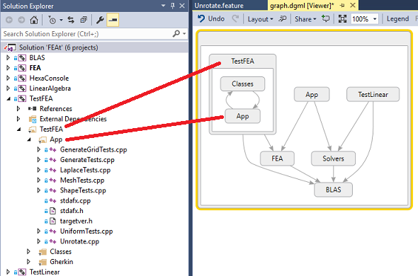

When developing a piece of software circular dependencies between classes, etc. make the code fragile to modification and, if they are at the level where it is between binaries, cause build issues. Trawling through the source code to find and fix can be time consuming so this article analyses some project code with the open source Visual Studio plug-in DeepEnds (source code).

The above diagram shows input on the left and some output on the right. Please note the mapping between the hierarchical filters of the project files in the Solution Explorer and the resulting graph in the dgml file viewer of Visual Studio Community 2015. Please note that the Gherkin filter contains feature files which aren't parsed by DeepEnds as they contain DSL code (the interested reader is referred to A Slice of Cucumber).
If the input had instead been .NET the nodes in the graph would have been labelled with the names of the namespaces and the classes, the associated hierarchy resulting in subgraphs. So that is a reasonable strategy for choosing the filter names. Note that care should be taken when re-using filter names across projects as this can lead to the hiding of circular dependencies between the binaries.
This then leaves the question of which file goes into which filter. This leads to the rather contrived example that the above diagram illustrates.
In the DGML graph the TestFEA node has been expanded to show a cycle. This is more easily investigated by looking at the associated HTML report which includes a summary for each level. A truncated version of the report for the top level contains the following table
| (E + P - N) / N | E + P - N | N | Externals | SLOC | Cycle | Section | |||||||||
|---|---|---|---|---|---|---|---|---|---|---|---|---|---|---|---|
| Val | Max | Sum | Val | Max | Sum | Val | Max | Sum | Count | Max | Sum | Expected | Max | ||
| 0.50 | 0.50 | 1.88 | 3 | 4 | 12 | 6 | 53 | 234 | 0 | 19 | 10672 | 30 | 469 | Top level | |
| 0.00 | 0.00 | 0.00 | 0 | 0 | 0 | 1 | 1 | 1 | 12 | 12 | 80 | 80 | 80 | App | |
| 0.00 | 0.27 | 0.27 | 0 | 3 | 3 | 2 | 11 | 17 | 0 | 3 | 513 | 29 | 99 | BLAS | |
| 0.44 | 0.44 | 0.61 | 4 | 4 | 5 | 9 | 53 | 124 | 7 | 16 | 4928 | 28 | 469 | FEA | |
| 0.00 | 0.00 | 0.00 | 0 | 0 | 0 | 52 | 52 | 52 | 2 | 3 | 2854 | 33 | 347 | Solvers | |
| 0.50 | 0.50 | 0.50 | 1 | 1 | 1 | 2 | 16 | 28 | 26 | 12 | 1958 | 36 | 432 | Cycle | TestFEA |
| 0.00 | 0.00 | 0.00 | 0 | 0 | 0 | 3 | 3 | 6 | 19 | 19 | 339 | 11 | 203 | TestLinear | |
The first nine columns have formulas based on the number of edges (E), parts (P) and nodes (N), these are discussed in Why Favour the Cyclomatic Number? Specifically the value at that level in the tree and the sum and maximum over the tree of the three formulas (E+P-N)/N, E+P-N and N. The next two columns are the count of the number of externals that corresponds to the dependencies which form the edges and its maximum value as traverse further down the tree. Then the sum of the source lines of code as the tree is traversed is given followed by the result of fitting a log-normal distribution as detailed in Counting Lines of Code, followed by the maximum in the tree.
The final two columns contain the information that is of interest to our example. Whether there is a cycle and the (sub)graph in which it occurs.
Navigating down to the report for TestFEA section there is a similar table
| (E + P - N) / N | E + P - N | N | Externals | SLOC | Cycle | Section | |||||||||
|---|---|---|---|---|---|---|---|---|---|---|---|---|---|---|---|
| Val | Max | Sum | Val | Max | Sum | Val | Max | Sum | Count | Max | Sum | Expected | Max | ||
| 0.50 | 0.50 | 0.50 | 1 | 1 | 1 | 2 | 16 | 28 | 26 | 12 | 1958 | 36 | 432 | Cycle | TestFEA |
| 0.00 | 0.00 | 0.00 | 0 | 0 | 0 | 10 | 10 | 10 | 22 | 12 | 683 | 86 | 149 | TestFEA\App | |
| 0.00 | 0.00 | 0.00 | 0 | 0 | 0 | 16 | 16 | 16 | 18 | 8 | 1275 | 25 | 432 | TestFEA\Classes | |
This is followed by a table for the 26 externals that, when truncated, looks like
| External dependencies |
|---|
| BLAS\Algebra\Full.h |
| BLAS\Algebra\Matrix.h |
| BLAS\Algebra\Vector.h |
| BLAS\FileIO\WriteMatrix.h |
| FEA\Core\Elements\ElementHandler.h |
Next a table that lists which files form the end of the edges
| Internal Dependencies |
|---|
| TestFEA\App\stdafx.h |
| TestFEA\Classes\AreaCalculator.h |
| TestFEA\Classes\BoxMesh.h |
| TestFEA\Classes\DiffFiles.h |
| TestFEA\Classes\LocalNodes.h |
| TestFEA\Classes\OneMesh.h |
| TestFEA\Classes\TestSolver.h |
| TestFEA\Classes\VolumeCalculator.h |
Then a table detailing which dependencies form the edges that, when truncated, looks like
| TestFEA\Classes | → | TestFEA\App |
|---|---|---|
| TestFEA\Classes\DiffFiles.h | → | TestFEA\App\stdafx.h |
| TestFEA\Classes\LocalNodes.h | → | TestFEA\App\stdafx.h |
| TestFEA\App | → | TestFEA\Classes |
| TestFEA\App\GenerateGridTests.cpp | → | TestFEA\Classes\DiffFiles.h |
| TestFEA\App\GenerateGridTests.cpp | → | TestFEA\Classes\BoxMesh.h |
| TestFEA\App\GenerateTests.cpp | → | TestFEA\Classes\AreaCalculator.h |
| TestFEA\App\GenerateTests.cpp | → | TestFEA\Classes\DiffFiles.h |
| TestFEA\App\GenerateTests.cpp | → | TestFEA\Classes\LocalNodes.h |
Finally a table containing the structure matrix is given for completeness as it is just another way of reporting the graph
| App | \ | 1 |
|---|---|---|
| Classes | 1 | \ |
When looking to fix circular dependencies the information of choice is the underlying dependencies which form the edges. In this contrived example it can be seen that the issue was due to placing stdafx.h under TestFEA\App and not TestFEA\Classes. Moving it along with stdafx.cpp and targetver.h into TestFEA\Classes proved effective in removing the cycle.
As mentioned this example is contrived, in an earlier iteration of the example the code had one class with two responsibilities leading to a cycle that was causing extreme prevarication in how to refactor. Specifically wading through the source code was not causing the issue to be found and this led to the original (code and subsequently) article on this topic - As-Is Software Architecture. Incidentally the cycle was broken by splitting the class at issue into two pieces. Note that as all the code was in the same binary there was no build issue. In fact there when looked at from the level of the individual files there was no circular dependency. i.e. It was only at the level of the (mis)design that the issue existed.